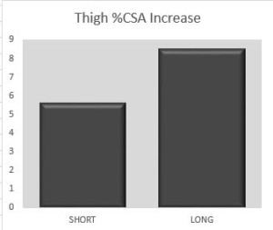

Progressive overload is a well-established principle for achieving continued progress in resistance training programs. In general terms, progressive overload can be defined as consistently challenging the neuromuscular system beyond its present capacity. It’s commonly accepted that this...
Brad Schoenfeld, Ph.D, C.S.C.S., is an internationally renowned fitness expert and widely regarded as one of the leading authorities on body composition training (muscle development and fat loss). He is a lifetime drug-free bodybuilder, and has won numerous natural bodybuilding titles.
However, there is a well-established phenomenon called the repeated bout effect, whereby continual performance of the same routine markedly attenuates damage-related symptoms compared to the initial bout. In fact, there is evidence that just one additional bout of the same exercise protocol reduces the swelling response to only one-third of the initial bout. Consistent training with the same routine further diminishes these effects, as eloquently shown in a study by Damas et al who tracked indices of muscle damage across 10 weeks of regimented resistance training carried out to volitional muscular failure. As shown in the graph above, damage was substantial after the initial training session. By the fifth workout, damage was substantially reduced and by the 19th workout, damage was practically inconsequential as measured 48 hours post-exercise. Post-testing for our study was done 48 to 72 hours after the last bout of a routine that was performed 24 times over an 8-week period. Thus, while I can’t completely rule out the possibility that there was swelling in the muscles, it would seem highly unlikely that this would have confounded our findings. This is particularly true given that our subjects were resistance-trained men with 4+ years training experience, who were already acclimated to the stresses of regular lifting.
On a separate note, in the discussion section of our paper we briefly discussed the results of another study on the topic carried out by Ostrowski et al. We noted that, similar to our study, the results of Ostrowski et al supported the hypothesis that volume is a primary driver of hypertrophy. Some have asked why we did not discuss the dose-response implications between their study and ours. This was a matter of economy. Comparing and contrasting findings would have required fairly extensive discussion to properly cover nuances of the topic. Moreover, for thoroughness we then would have had to delve into the other dose-response paper by Radaelli et al, further increasing word count. Our discussion section was already quite lengthy, and we felt it was better to err on the side of brevity. However, it’s certainly a fair point and I will aim to address those studies now.
Ostrowski et al carried a study in resistance-trained men, who were randomized to perform either 1, 2 or 4 sets per exercise. For triceps, our results were somewhat inconsistent with theirs. Whereas we showed that muscle thickness increased by 1.1%, 3% and 5.5% for the low, middle and high volume groups, respectively, they showed increases of 2.3%, 4.7% and 4.8%, respectively. The primary difference between findings is that Ostrowski showed similar growth between middle and high volume groups while ours showed a graded increase from low to middle to high. The overall differences were modest on this outcome. Possible reasons for the discrepancy could be due to differences in methods. Ostrowski et al used a typical bodybuilding-type routine that involved a four day split. Subjects trained legs on Day 1; chest and shoulders on Day 2; back and calves on Day 3; and arms on Day 4. On the other hand, our study employed a total body routine where all muscles were trained in the same session, three times per week. Ostrowski et al also had subjects perform single joint exercises for the triceps in addition to their contribution in pushing movements, whereas subjects in our study just performed pushing movements. As discussed in the limitations of our paper, there is evidence that multijoint movements produce similar hypertrophy to single joint movements, but we cannot rule out that inclusion of targeted training for the triceps influenced differences in results. I’d note that the triceps data from our study was the least compelling of the four muscles measured for showing an effect of volume on hypertrophy. Thus, given the fairly low response across conditions, the discrepancy also could be due to the effects of random chance.
With respect to lower body hypertrophy, our results are somewhat in concert with those of Ostrowski et al. Ostrowski et al found quadriceps thickness increased of 6.8%, 5%, and 13.1% for low, middle and high volume groups, respectively. These findings are fairly consistent with ours, which found an increase in mid-thigh hypertrophy of 3.4%, 5.4, and 12.5%, and lateral thigh hypertrophy of 5.0%, 7.9, and 13.7% in the low, middle and high volume conditions, respectively. The fact that their low and middle volume conditions did not show differences may be related to the low volumes performed in both of these conditions (3 and 6 sets per muscle per week, respectively) whereas the high volume condition performed 12 sets per muscle per week. It’s also interesting that much greater levels of volume were required to achieve similar hypertrophic responses in the quadriceps between our study and that of Ostrowski; the reasons for this are not clear.
Our findings are consistent with those of Radaelli et al, who randomized young men to perform either 1, 3 or 5 sets per exercise per week. The subjects were military personnel who regularly performed calisthenic-type exercise but were not involved with resistance training at the time of the study. They reported increases in biceps thickness of 1.1%, 7.8% and 17% whereas our study found post-study increases in biceps thickness of 1.6%, 4.7% and 6.9% for the low, middle and high volume groups, respectively. For the triceps, Radaelli et al found pre- to post-study increases of 0%, 1.7%, and 20.8% for the low, middle and high volume groups, respectively. As noted above, we found 1.1%, 3% and 5.5% for the same conditions. Thus, both studies showed a dose-response relationship between volume and hypertrophy, albeit Radaelli et al reported much greater increases for the highest volume condition. Radaelli et al did not report results for lower body hypertrophy, so we cannot contrast findings in this regard. The reasons for similarities between findings potentially can be attributed to the fact that our designs were similar. Both studies employed graded doses of 1, 3 and 5 sets per exercise per session and both had subjects perform a total body routine, three days per week. A difference between studies is that subjects in Radaelli performed single joint exercises for the biceps and triceps whereas our study only performed multijoint movements for these muscles. Moreover, their study lasted 6 months whereas ours lasted 2 months.
Since acceptance of our paper, two additional studies have been published on the topic. I’ll discuss the ultrasound results, as they are specific to our findings. Heaselgrave et al randomized resistance-trained men to perform either 9, 18 or 27 sets of biceps training each week. Subjects performed a combination of multi and single joint exercises for the muscle. Although results did not rise to a level of statistical significance, scrutinization of the individual data appears to show a fairly clear hormetic response (i.e. inverted U), with results peaking in the middle volume condition as shown in the graph above. This study had a couple of notable limitations. For one, subjects were allowed to train on their own outside of the study but were advised not to perform any direct biceps exercise. Although subjects did not report significant confounding from outside training, it is known that self-report can lack accuracy and it therefore remains questionable whether additional training was in fact carried out. Moreover, the subjects in the higher volume conditions trained two days per week while the lowest volume condition trained one day per week. Thus, this study in actuality had two treatment variables, confounding the ability to draw causality on volume alone.
Finally, Haun et al recently carried out a study in resistance-trained men. The study employed a somewhat unusual design, whereby volume was ramped up each week over the course of 6 weeks, beginning with 10 sets per muscle per week and progressing to 32 sets per muscle in week 6. Only 4 exercises were employed: back squat, bench press, stiff legged deadlift, and lat pulldown. A strong point of this study was that they employed midpoint testing after the 3rd week, thereby providing insights into how changes occurred over time. Muscle thickness for the biceps brachii increased from baseline to the midpoint, but then attenuated by the end of the study. This suggests results peaked at 20 sets per muscle per week. Alternatively, results for the vastus lateralis showed no significant changes from mid to post testing, but significantly increased from midpoint (20 sets/muscle/week) to the end of the study (32 sets/muscle/week). Interestingly, the authors also carried out biopsy testing and found that CSA of the vastus lateralis significantly decreased from baseline to mid but then significantly increased from mid to post. It should be noted that the overall magnitude of the increases in this study were quite modest. That may be due to the design, whereby subjects performed 10 reps at 60% of 1RM each set. This is a relatively light load for trained subjects, and it can be speculated they weren’t sufficiently challenged. Another factor to consider is that volume was progressively increased each week, so subjects only trained at a given volume for 1 week. It is therefore difficult to extrapolate the effects of training at a prescribed volume over multiple weeks.
In summing up the literature to date, the one thing that appears clear is that volume plays a fairly prominent role in maximizing growth, but nevertheless significant hypertrophy can be obtained at fairly low volumes. It’s difficult to reconcile discrepancies between studies given differences in methodology. And as as is almost always the case in an applied science such as exercise, prescription will be specific to the individual as there are large interindividual variances associated with response to volume. The astute fitness pro will take the current research into account and then use his/her expertise to customize program prescription, taking into account the potential benefit balanced against the time commitment involved.
For as long as I can recall, bodybuilders have been preaching the importance of a mind-muscle connection for maximizing muscle development. In case you’re not aware, a mind-muscle connection (a variation of the concept in the field of motor learning known as an “internal focus of attention”) is the process of actively thinking about the target muscle during training and then feeling it work through the full range of motion. According to theory, this strategy maximizes stimulation of the muscles you’re trying to target in a given exercise while reducing the involvement of “secondary” movers. This combination hypothetically should result in greater growth.
Hypothetically….
Numerous studies have confirmed that a mind-muscle connection does in fact increase activation of the target muscle as measured by a technique called electromyography. However, higher activation of a muscle doesn’t necessarily mean it will hypertrophy to a greater extent over the course of a long-term training program. To my amazement, no one had endeavored to investigate whether adopting a mind-muscle connection during training actually had a beneficial effect on muscle growth in a controlled, long-term study.
So the curious science nerd that I am, I took it upon myself to find out. Here’s the scoop on our recently published paper on the topic.
What We Did
30 college-aged men agreed to participate in the study and were randomly assigned to either train with an internal focus (mind-muscle connection) or an external focus. All participants performed 4 sets of arm curls and leg extensions for 8 to 12 RM on 3 non-consecutive days per week, with sets carried out to muscular failure. Every rep of every set was supervised by one of my research assistants. The mind-muscle group was instructed to “squeeze the muscle” on each rep while the external focus group was instructed to “get the weight up.” The exercise portion of the program lasted 8 weeks with a week taken for testing immediately before and immediately following the training period.
As those of you who follow my work undoubtedly know, the vast majority of my studies are carried out in subjects with resistance training experience. However, in this case I decided to use untrained subjects.
Why?
Well, trained individuals tend to get hardened into a given attentional focus (called a “deep basin” in motor learning). It’s therefore difficult to get these individuals to change their focus during training. This would be especially problematic in a study such as this since there is no way to be sure what the lifter is actually thinking when training. An untrained lifter is a blank slate and thus we could be more confident that he would follow the prescribed attentional focus strategy.
I also chose to use only single joint exercises for the study. The reasoning here is that it’s easier to focus on a given muscle during a single joint lift. Squats, rows and presses involve multiple primary muscle movers that makes it difficult for a lifter – particularly one with no training experience – to focus on a given single muscle. What’s more, multijoint exercises require more of a learning curve to coordinate movement patterns in the early stages of training, which would further impair the ability to develop a mind-muscle connection as well as delaying the onset of hypertrophy in favor of neural adaptations.
What We Found
After 8 weeks of consistent training, subjects who used a mind-muscle condition had almost double the muscle growth in the biceps brachii compared to those using an external focus (12.4% vs 6.9%, respectively). Alternatively, muscle growth for the quadriceps was similar between conditions. From a maximal strength standpoint, isometric strength of the elbow flexors increased substantially more for the internal focus group while knee extensor strength was markedly greater for the external focus group.
What We Learned
The novel finding of the study was that superior gains in biceps hypertrophy were made by employing an internal focus of attention. Based on these findings, it appears the bros were right; employing a mind-muscle connection enhances muscle growth.
But wait a sec; if that’s the case, then how come attentional focus did not seem to matter for thigh hypertrophy…?
Although it’s impossible to say for sure since we didn’t attempt to investigate mechanisms, a possible reason is that subjects simply found it easier to focus on the biceps as opposed to the quads. This is logical given that the upper extremities are used for fine motor skills (i.e. picking things up, writing, etc) while the lower extremities are involved in gross motor skills (i.e. walking, kicking, etc). Thus, people tend to be more conscious of their arm muscles and less so of the leg musculature. The fact that the subjects were untrained would seemingly contribute to this discrepancy. I’d hypothesize that well-trained lifters would be better able to focus on the quads when training and thus achieve better hypertrophy. This needs further study.
Here’s the take home: It appears beneficial to adopt a mind-muscle connection if your goal is to maximize muscle growth. Instead of worrying about a specific tempo, simply focus on the muscle being trained and visualize it working throughout the full range of motion. Now this comes with the caveat that findings are specific to a moderate rep range; using heavy loads (i.e. 3-5 reps) may preclude the ability to take advantage of this strategy as your focus would conceivably have to shift to just getting up the weight as efficiently as possible. Importantly, this is just one study and shouldn’t be taken as the be-all-end-all on the topic. Hopefully more longitudinal studies will be conducted on the topic to draw more definitive conclusions. Future research should look to compare internal versus external focus strategies using multi-joint exercises in trained lifters to better understand how a mind-muscle connection impacts growth.
For further insights, check out the video I did for Omar Isuf’s YouTube channel below. I discuss the nuances of the topic and their relevance to practical application in a lifting program.
In a recent blog post , I, along with my colleague Bret Contreras, published a “letter to the editor” that raised issue with various claims made in a review of exercise-induced muscle damage. In the spirit of scientific discourse, we invited the authors of the paper – Felipe Damas, Cleiton Libardi, and Carlos Ugrinowitsch – to publish a rebuttal to our letter on my site. They have obliged and what follows is their response.
We acknowledge the authors of the letter to the Editor for the opportunity to continue the debate on the interesting topic of mechanisms related to resistance training (RT)-induced skeletal muscle hypertrophy. While we agree that the role of muscle damage on muscle hypertrophy needs further scientific scrutiny, as we pointed out in our article (Damas et al. 2018a), current evidence indicates that muscle damage promoted by initial resistance exercise (RE) does not predict, explain, or potentiate skeletal muscle hypertrophy induced by weeks of RT (Damas et al. 2016; Flann et al. 2011). Moreover, if muscle damage magnitude is severe, the exercise-induced stress results in maladaptation, segmental necrosis or even muscle atrophy (Butterfield 2010; Eriksson et al. 2006; Foley et al. 1999; Lauritzen et al. 2009). That said, it remains to be elucidated if disturbances within muscle fibres, e.g., Z-band streaming, muscle repair and remodelling are required in early RT phases to prepare muscle tissue to endure further stresses; albeit delayed onset muscle soreness, muscle proteins (e.g., creatine kinase) leakage to bloodstream, or large decreases in muscle function can be avoidable if the goal is muscle hypertrophy (see p.493 of Damas et al. (2018a).
In their letter, the authors mentioned that our original article (Damas et al. 2016) was not designed to test if muscle damage have a role on muscle hypertrophy, what we respectfully disagree. While more intelligent study designs could be drawn to test the hypothesis, we agree with the authors that an investigation that would modulate only the ‘muscle damage’ variable is virtually impossible. However, some points regarding the rational of the research design presented by Schoenfeld and Contreras to test the damage vs hypertrophy paradigm requires further considerations. The comparison between two groups with one demonstrating significant damage in the beginning of RT and another experiencing minimal damage throughout RT has already been performed by Flann et al. (2011) (using muscle soreness and plasma creatine kinase as markers), and they showed similar levels of hypertrophy between groups. Alternatively, maintaining significant damage throughout RT is, as far as we understand, somewhat unfeasible. Firstly because muscle damage is potently attenuated within the first training sessions – repeated bout effect (Barroso et al. 2010; Chen et al. 2009; Clarkson and Hubal 2002; Damas et al. 2016; McHugh 2003), and secondly, to the best of our knowledge, there is no empirical evidence that ‘strategies’ (e.g., changing resistance training variables – volume, intensity, exercises) could overcome the repeated bout effect and further increase or even maintain an initial level of muscle damage. Accordingly, Zourdos et al. (2015) demonstrated that changing elbow flexors exercises between training sessions does not minimize the repeated bout effect. Therefore, in our original article (Damas et al. 2016), we opted to use a reverse logic, maintaining training stimulus as constant as possible, and use the repeated bout effect as strategy to produce distinct muscle damage magnitudes to test the relationship between changes in muscle damage magnitude, myofibrillar protein synthesis (MyoPS) and muscle hypertrophy. Accordingly, we used previously untrained subjects to achieve distinct magnitudes of muscle damage (through direct and indirect muscle damage markers, to form a more complete picture of the process), investigating an early RT phase (i.e., after only 4 RT bouts) as a first ‘attenuated damage’ time-point in which muscle hypertrophy is not significant yet (thus hypertrophic potential is maintained compared to baseline), and relate to acute MyoPS response after the same RT bouts and to muscle hypertrophy induced by 10 weeks of RT. Doing so, we isolated the best way we could the ‘damage’ variable. We also provided the same data for a RT session in the last week of RT. Importantly, our longitudinal design testing the same subjects over time, maintaining exercise mode (isoinertial RT, involving concentric and eccentric phases) with every set to muscle failure (same relative load), allowed significant internal validity while providing ecological validity of our results. We demonstrated that the subjects that had a greater magnitude of muscle damage in the early phase of RT were not the same subjects that showed greater muscle hypertrophy after 10 weeks of RT (correlation analysis). In addition, we showed that MyoPS does not correlate to muscle hypertrophy when damage is the largest (in response to the first RT session), but MyoPS presented a trend to moderately correlate (r ~ 0.6, p = 0.09) to the degree of damage in response to the same RT bout. After progressive attenuation of muscle damage throughout RT, MyoPS strongly correlated (r ~ 0.9) with muscle hypertrophy induced by 10 weeks of RT (but MyoPS showed no association with damage anymore) (Damas et al. 2016). Most likely, the increase in MyoPS at the beginning of RT is directed to repair and remodel muscle tissue and with RT progression and thus damage attenuation, MyoPS increase is focused on muscle hypertrophy. Overall, more (or less) damage, throughout the entire RT program did not correlate at any point with muscle hypertrophy induced by RT. Thus, we suggested, based on our previous work (Damas et al. 2016) and mainly on the discussion developed in our review (Damas et al. 2018a) that muscle damage was not predictive, did not potentiate or explained the magnitude of RT-induced muscle hypertrophy. We are in line with the authors when they argue in their letter that is impossible to determine whether damage is required to occur previously to muscle hypertrophy, repairing and remodelling muscles to be prepared for further stress (Damas et al. 2018a). In fact, in the article the authors cite in their letter (Lilja et al. 2018), the high doses of anti-inflammatory drugs could be interfering in muscle repair and remodelling (involving, for example, enhanced protein turnover, addition of sarcomeres in parallel in response to Z-band streaming). Successful muscle repair and remodelling might be possibly required to endure subsequent RE sessions in the RT program, which in turn, would supress muscle hypertrophy. Indeed, more work is required on this topic.
The authors suggested that we misinterpreted a finding from their previous work (Schoenfeld et al. 2017), as eccentric RT produced an effect size point estimation of 0.25 when compared to concentric RT. In addition, the authors provided the 95% confidence interval of the point estimation of all of the studies included in their meta-analysis. Even though Schoenfeld and Contreras supported their claim based on Hopkins’ magnitude-based inference work, one should consider that confidence intervals, when using a frequentist approach (or credible intervals for a Bayesian approach) are critical to determine the region in which the true population effect value should be included or the actual probability of an event to occur. Nakagawa and Cuthill (2007) provided a good example on the topic:
“The approach of combining point estimation of effect size with CIs provides us with not only information on conventional statistical significance but also information that cannot be obtained from p values. For example, when we have a mean difference of 29 with 95% CI = –1 to 59, the result is not statistically significant (at a level of 0.05) because the CIs include zero, while another mean difference 29 with 95% CI = 9 to 49 is statistically significant because the CI does not include zero.”
This idea is particularly important as the effect size point estimation obtained in a meta-analysis depends on the articles retrieved from the search and may not represent “the true population value”. Thus, effect size confidence interval analysis is imperative as the actual effect size could be any value within the interval. As their confidence interval [-0.03, 0.52] included zero (Schoenfeld et al. 2017), it is possible that the alleged advantage of eccentric RT over concentric RT may be rather smaller or even does not occur. Furthermore, that was not the main point of our argument in the review (Damas et al. 2018a), which was that the evidence indicating superior hypertrophy for eccentric RT is, at least, controversial (please see p.492). The mechanical tension (which should not be confounded as a direct indicator of muscle damage) is greater in a maximal eccentric contraction compared with a maximal concentric contraction, possibly resulting in a greater hypertrophic-induced effect per repetition for the eccentric exercise mode. Indeed, training with the same number of maximal repetitions showed superior hypertrophy for eccentric vs concentric RT (Farthing and Chilibeck 2003). However, when both exercise modes are matched for total work, Moore et al. (2012) showed similar magnitudes of muscle hypertrophy between them. Yet, it needs to be highlighted that different contraction modes seems to rely on distinct mechanisms to induce muscle hypertrophy. For example, it was showed that total work per repetition is greater in eccentric vs concentric RE (Moore et al. 2012; Rahbek et al. 2014), but the voluntary activation of motor units is lower for eccentric RE (Beltman et al. 2004) and metabolic stress is greater following concentric RE (Durand et al. 2003). Therefore, concluding about the role muscle damage to RT-induced muscle hypertrophy using distinct isolated contraction modes, which rely on several mechanisms to promote hypertrophy, may be equivocal. That was imperative for the design choice in our original study (Damas et al. 2016). We maintained exercise mode throughout RT with the same relative load (as explained above), which would rapidly attenuate damage providing different magnitudes of damage to be compared in the same subjects longitudinally. In addition, even with protocols that induce high levels of muscle damage, i.e., maximal eccentric RE, muscle damage is quickly attenuated with RE repetition (Chen et al. 2009) (actually, as curiosity, the greater is initial damage, the stronger is the protective effect (Chen et al. 2007)), questioning the real importance of damage in the long run (i.e., several weeks, months or years of RT). Contributing to this line of argumentation, Rahbek et al. (2014) demonstrated that MyoPS increase post-RE was similar between eccentric and concentric RE after only three RT bouts (i.e., small period of adaptation to RT), despite eccentric RE resulting in greater muscle damage and MyoPS response after a first RT session (Moore et al. 2005).
Finally, we do not claim that satellite cells (SC) are solely involved in muscle regeneration or repair, and not in muscle hypertrophy. We clearly state that “Chronic repetition of RE will maintain SC elevation, replenishing SC niche and enhancing myogenic capacity for future stressful events or muscle fibre hypertrophy” (p.495). However, SC increase early on into RT, as in the scenario in which muscle damage is pronounced, did not result in increased myonuclear number after either isoinertial concentric-eccentric RE (Damas et al. 2018b; Kadi et al. 2004) or a high volume eccentric RE (i.e., 300 repetitions) (Hyldahl et al. 2015). If such an increase in SC resulted in increased myonuclear number due to damage early on into RT, one could suggest increased transcription capacity due to damage, but this was not the case (Damas et al. 2018b; Hyldahl et al. 2015; Kadi et al. 2004). Thus, to this point it is highly speculative to relate the early increase in SC niche, due to stress/damage, to a later on into RT support of muscle hypertrophy, which would undeniably be interesting in low-responders to RT and elderly. Although, one might argue that these populations might not reach a theoretical myonuclear domain threshold that would require an increase in myonuclear number donated by SC (Conceicao et al. 2018; Kadi et al. 2004). SC pool increase in response to unaccustomed stress and muscle damage, and repeated exercise stress seem to keep SC pool elevated, probably as an anticipatory mechanism to aid in possible future stressful events or to support large muscle fibre hypertrophy (to a more in depth discussion see p.493-495). However, there is evidence demonstrating that SC pool was increased in a non-hypertrophic (i.e., aerobic) training (Joanisse et al. 2013), favouring a major role for SC activity related to stress response.
Although we acknowledge that the theme of muscle damage vs hypertrophy requires further testing and elucidations as we mentioned above, it is our understanding that based on current evidence the ball is on the other side of the court, i.e. the hypothesis of damage having a minor (or even large) role in explaining or potentiating muscle hypertrophy is speculative at this point. We look forward to novel study designs testing the damage vs hypertrophy paradigm to continue solidifying evidence-based knowledge on the theme.
References
Barroso R, Roschel H, Ugrinowitsch C, Araujo R, Nosaka K, Tricoli V (2010) Effect of eccentric contraction velocity on muscle damage in repeated bouts of elbow flexor exercise. Appl Physiol Nutr Metab 35:534-540
Beltman JG, Sargeant AJ, van Mechelen W, de Haan A (2004) Voluntary activation level and muscle fiber recruitment of human quadriceps during lengthening contractions. J Appl Physiol 97:619-626
Butterfield TA (2010) Eccentric exercise in vivo: strain-induced muscle damage and adaptation in a stable system. Exerc Sport Sci Rev 38:51-60. doi:10.1097/JES.0b013e3181d496eb
Chen TC, Chen HL, Lin MJ, Wu CJ, Nosaka K (2009) Muscle damage responses of the elbow flexors to four maximal eccentric exercise bouts performed every 4 weeks. Eur J Appl Physiol 106:267-275. doi:10.1007/s00421-009-1016-7
Chen TC, Nosaka K, Sacco P (2007) Intensity of eccentric exercise, shift of optimum angle, and the magnitude of repeated-bout effect. J Appl Physiol (1985) 102:992-999
Clarkson PM, Hubal MJ (2002) Exercise-induced muscle damage in humans. Am J Phys Med Rehabil 81:S52-69. doi:10.1097/01.PHM.0000029772.45258.43
Conceicao M et al. (2018) Muscle fibre hypertrophy to myonuclei addition:A systematic review and meta-analysis. Med Sci Sports Exerc in press
Damas F, Libardi CA, Ugrinowitsch C (2018a) The development of skeletal muscle hypertrophy through resistance training: the role of muscle damage and muscle protein synthesis. Eur J Appl Physiol 118:485-500. doi:10.1007/s00421-017-3792-9
Damas F et al. (2018b) Early- and later-phases satellite cell responses and myonuclear content with resistance training in young men. PLoS One 13:e0191039. doi:10.1371/journal.pone.0191039
Damas F et al. (2016) Resistance training-induced changes in integrated myofibrillar protein synthesis are related to hypertrophy only after attenuation of muscle damage. J Physiol 594:5209-5222. doi:10.1113/JP272472
Durand RJ et al. (2003) Hormonal responses from concentric and eccentric muscle contractions. Med Sci Sports Exerc 35:937-943
Eriksson A, Lindstrom M, Carlsson L, Thornell LE (2006) Hypertrophic muscle fibers with fissures in power-lifters; fiber splitting or defect regeneration? Histochem Cell Biol 126:409-417. doi:10.1007/s00418-006-0176-3
Farthing JP, Chilibeck PD (2003) The effects of eccentric and concentric training at different velocities on muscle hypertrophy. Eur J Appl Physiol 89:578-586. doi:10.1007/s00421-003-0842-2
Flann KL, LaStayo PC, McClain DA, Hazel M, Lindstedt SL (2011) Muscle damage and muscle remodeling: no pain, no gain? J Exp Biol 214:674-679. doi:10.1242/jeb.050112
Foley JM, Jayaraman RC, Prior BM, Pivarnik JM, Meyer RA (1999) MR measurements of muscle damage and adaptation after eccentric exercise. J Appl Physiol (1985) 87:2311-2318
Hyldahl RD et al. (2015) Extracellular matrix remodeling and its contribution to protective adaptation following lengthening contractions in human muscle. FASEB J 29:2894-2904. doi:10.1096/fj.14-266668
Joanisse S, Gillen JB, Bellamy LM, McKay BR, Tarnopolsky MA, Gibala MJ, Parise G (2013) Evidence for the contribution of muscle stem cells to nonhypertrophic skeletal muscle remodeling in humans. FASEB J. doi:fj.13-229799 [pii]
10.1096/fj.13-229799
Kadi F, Schjerling P, Andersen LL, Charifi N, Madsen JL, Christensen LR, Andersen JL (2004) The effects of heavy resistance training and detraining on satellite cells in human skeletal muscles. J Physiol 558:1005-1012. doi:10.1113/jphysiol.2004.065904
Lauritzen F, Paulsen G, Raastad T, Bergersen LH, Owe SG (2009) Gross ultrastructural changes and necrotic fiber segments in elbow flexor muscles after maximal voluntary eccentric action in humans. J Appl Physiol (1985) 107:1923-1934. doi:10.1152/japplphysiol.00148.2009
Lilja M et al. (2018) High doses of anti-inflammatory drugs compromise muscle strength and hypertrophic adaptations to resistance training in young adults. Acta Physiol (Oxf) 222. doi:10.1111/apha.12948
McHugh MP (2003) Recent advances in the understanding of the repeated bout effect: the protective effect against muscle damage from a single bout of eccentric exercise. Scand J Med Sci Sports 13:88-97
Moore DR, Phillips SM, Babraj JA, Smith K, Rennie MJ (2005) Myofibrillar and collagen protein synthesis in human skeletal muscle in young men after maximal shortening and lengthening contractions. Am J Physiol Endocrinol Metab 288:E1153-1159. doi:10.1152/ajpendo.00387.2004
Moore DR, Young M, Phillips SM (2012) Similar increases in muscle size and strength in young men after training with maximal shortening or lengthening contractions when matched for total work. Eur J Appl Physiol 112:1587-1592. doi:10.1007/s00421-011-2078-x
Nakagawa S, Cuthill IC (2007) Effect size, confidence interval and statistical significance: a practical guide for biologists. Biol Rev Camb Philos Soc 82:591-605. doi:BRV27 [pii]
10.1111/j.1469-185X.2007.00027.x
Rahbek SK, Farup J, Moller AB, Vendelbo MH, Holm L, Jessen N, Vissing K (2014) Effects of divergent resistance exercise contraction mode and dietary supplementation type on anabolic signalling, muscle protein synthesis and muscle hypertrophy. Amino Acids 46:2377-2392. doi:10.1007/s00726-014-1792-1
Schoenfeld BJ, Ogborn DI, Vigotsky AD, Franchi MV, Krieger JW (2017) Hypertrophic Effects of Concentric vs. Eccentric Muscle Actions: A Systematic Review and Meta-analysis. J Strength Cond Res 31:2599-2608. doi:10.1519/JSC.0000000000001983
Zourdos MC et al. (2015) Repeated Bout Effect in Muscle-Specific Exercise Variations. J Strength Cond Res 29:2270-2276. doi:10.1519/JSC.0000000000000856
Recently, Damas et al (2018) published an interesting review on the role of exercise-induced muscle damage in muscle hypertrophy. Although the paper was well-done overall, my colleague, Bret Contreras, and I felt there were several issues that needed to be highlighted. We endeavored to send a letter to the editor at the journal in which the paper was published (European Journal of Applied Physiology). Unfortunately, the journal has a strict word count for letters to the editor, and the editor asked us to cut down the length of our letter to accommodate the journal’s guidelines. We attempted to comply with this request and submitted a revision, but the editor stated the letter would have to be cut down still further to meet requirements. At that point, we declined a further revision as we did not want to water down our points simply to have the letter published.
Thus, we have decided to post the letter online so that it can be read in its entirety. We have the utmost respect for the authors of the paper and would welcome to publish their rebuttal here if they so choose. Hopefully this will further discussion and point out the nuances of drawing conclusions on a topic as complex as this.
We read with interest the paper by Damas et al (Damas et al. 2017) titled, “The development of skeletal muscle hypertrophy through resistance training: the role of muscle damage and muscle protein synthesis,” which, in part, endeavored to review the role of exercise-induced muscle damage on muscle hypertrophy. This is a multifaceted topic and the authors are to be commended for attempting to delve into its complexities. That said, we feel there are a number of issues in interpretation of research and extrapolation that preclude drawing the inferences expressed in the paper that muscle damage neither explains nor potentiates increases in muscle hypertrophy. The intent of our letter is not to suggest that a causal role exists between hypertrophy and microinjury. Rather, we hope to provide balance to the evidence presented and offer the opinion that the jury is still very much out as to providing answers on the topic.
Firstly, the authors cite a study by Damas et al (Damas et al. 2016) as evidence that muscle damage is not involved in the hypertrophic response. However, this study was not designed to investigate a cause-effect relationship, or even correlation, between muscle damage and growth. While the study eloquently demonstrated that an initial bout of damage was explanatory as to why muscle protein synthesis is not associated with exercise-induced hypertrophy over time, it in no way can be used to draw inferences as to the long-term effects of damage on muscular adaptations. To properly study the topic would require carrying out a longitudinal resistance training (RT) study whereby one group experienced a predetermined level of damage and then comparing with another group that experienced minimal damage. Unfortunately, such a design is problematic as attempting to isolate damage in this fashion would invariably involve altering other RT variables that would confound the ability to draw causality. With respect to the Damas et al (Damas et al. 2016) study, it is impossible to determine whether some level of muscle damage experienced by subjects contributed to the observed hypertrophic changes in the study. Moreover, it is not clear whether more (or less) damage may have influenced hypertrophy over time. The only thing that can be concluded in this regard is that an initial exercise bout in untrained individuals appears to be directed toward structural repair as opposed to hypertrophy; the effects of repeated exposure to varying levels of damage beyond the initial bout cannot be extrapolated from the study design.
Second, the authors go on to cite the recent meta-analysis from our group (Schoenfeld et al. 2017) as evidence that there are no hypertrophic differences between the performance of concentric and eccentric actions and thus, given the well-established link between eccentric actions and micro-injury, indirectly inferring that muscle damage does not play a role in muscle growth. The authors’ conclusion was based on a priori alpha analysis, whereby the reported p-value (p = 0.07) did not reach “statistical significance.” However, null hypothesis testing at a predetermined alpha level has been widely criticized as a flawed statistical method that should not be used to draw practical inferences (Bernards et al. 2017; Gelman and Stern. 2012; Hopkins et al. 2009). A closer inspection of our data using the reported magnitude-based statistics show that eccentric actions may indeed promote a superior hypertrophic response. As noted in our paper, the effect size difference (0.25) showed a modest but potentially meaningful magnitude of effect favoring eccentric exercise, and the 95% confidence intervals (-0.03, 0.52) clearly favored the eccentric condition. Moreover, based on the guidelines for statistics in exercise science proposed by Hopkins et al (Hopkins et al. 2009), results were likely/probably not due to chance alone. Thus, our data actually lend support to a hypertrophic benefit for eccentric actions. It also should be noted that eccentric actions have been shown to produce differential intracellular anabolic signaling responses compared to other muscle actions (Eliasson et al. 2006; Franchi et al. 2014), and the regional hypertrophic changes demonstrated between concentric and eccentric actions in several longitudinal studies have been hypothesized to be resultant to damage along the length of myofibers (Franchi et al. 2014; Hedayatpour and Falla. 2012). It remains speculative as to whether microinjury contributes to these differential effects between muscle actions, but the possibility that it may play a role cannot be dismissed based on current evidence.
Lastly, the authors make the claim that satellite cells (SC) derived from damaging exercise are not involved in hypertrophic adaptations but rather function solely to mediate tissue regeneration. In support of this view, the authors cite a study by Hyldahl et al (Hyldahl et al. 2015) who found no evidence of myonuclear addition for up to 27 days following an initial bout of lengthening contractions. However, as the authors note in their review, myonuclear addition is not realized until an increase in muscle size exceeds ~26%; the theoretical threshold above which additional myonuclei are necessary to support continued growth. A lack of increase in the incorporation of myonuclei therefore would be expected in the Hyldahl et al (Hyldahl et al. 2015) study as minimal hypertrophy would necessarily occur from an acute bout of RT. Accordingly, under these circumstances there would be no impetus for SC-mediated myonuclear addition. Whether SC accretion from exercise-induced damage potentiates hypertrophic increases over time with repeated exercise damaging exercise bouts would require a longitudinal study comparing the effects of two distinct levels of muscle damage. It also is interesting to speculate that an increase in SC via damage may be particularly important for low responders to RT as well as older individuals, as evidence shows that their ability to expand the SC pool is suppressed, which may in turn explain the observed blunted hypertrophic response (Petrella et al. 2006; Petrella et al. 2008).Whether SC derived from micro-injury could enhance hypertrophy in these populations requires future study.
To summarize, the paper by Damas et al (Damas et al. 2017) addresses an important topic for understanding the mechanisms of muscle growth and raises some pertinent considerations as to what role, if any, muscle damage plays in the process. However, in the quest to provide answers to mechanistic questions we must avoid the temptation to prematurely infer conclusions that cannot be supported by the available literature. The question at hand is not whether muscle damage is the primary driver of hypertrophy; clearly it is not as compelling evidence indicates mechanical stress is predominant in this regard. The relevant question is whether muscle damage may enhance the hypertrophic response to regimented RT over time. And to this question, we contend that the current body of evidence is not sufficient to draw conclusions with any degree of confidence. There would seem to be a sound rationale for a potential beneficial effect as previously detailed in the literature (Schoenfeld. 2012). Moreover, Lilja et al (Lilja et al. 2017) recently demonstrated that high doses of anti-inflammatory drugs suppressed hypertrophic adaptations in young, healthy individuals, conceivably by inhibiting the cyclooxygenase (COX) pathway. It is intriguing that the inflammatory response elicited by muscle damage has been implicated in COX induction, and thus raises the possibility that repeated micro-injury from RT may augment its hypertrophic effects. How all this theory plays out in practice remains to be determined and highlights the need for more rigorous research. Until such research is carried out and in the absence of sufficient quality evidence on the topic, scientific protocol dictates the importance of remaining prudent, inquisitive and cautiously skeptical.
References
Bernards JR, Sato K, Haff GG, Bazyler CD (2017) Current Research and Statistical Practices in Sport Science and a Need for Change. Sports 5:87
Damas F, Libardi CA, Ugrinowitsch C (2017) The development of skeletal muscle hypertrophy through resistance training: the role of muscle damage and muscle protein synthesis. Eur J Appl Physiol . doi:10.1007/s00421-017-3792-9 [doi]
Damas F, Phillips SM, Libardi CA et al (2016) Resistance training-induced changes in integrated myofibrillar protein synthesis are related to hypertrophy only after attenuation of muscle damage. J Physiol 594:5209-5222. doi:10.1113/JP272472 [doi]
Eliasson J, Elfegoun T, Nilsson J, Kohnke R, Ekblom B, Blomstrand E (2006) Maximal lengthening contractions increase p70 S6 kinase phosphorylation in human skeletal muscle in the absence of nutritional supply. Am J Physiol Endocrinol Metab 291:1197-1205
Franchi MV, Atherton PJ, Reeves ND et al (2014) Architectural, functional and molecular responses to concentric and eccentric loading in human skeletal muscle. Acta Physiol (Oxf) 210:642-654. doi:10.1111/apha.12225 [doi]
Gelman A, Stern H (2012) The Difference Between “Significant” and “Not Significant” is not Itself Statistically Significant. The American Statistician 60:328-331
Hedayatpour N, Falla D (2012) Non-uniform muscle adaptations to eccentric exercise and the implications for training and sport. J Electromyogr Kinesiol 22:329-333. doi:10.1016/j.jelekin.2011.11.010 [doi]
Hopkins WG, Marshall SW, Batterham AM, Hanin J (2009) Progressive statistics for studies in sports medicine and exercise science. Med Sci Sports Exerc 41:3-13. doi:10.1249/MSS.0b013e31818cb278 [doi]
Hyldahl RD, Nelson B, Xin L et al (2015) Extracellular matrix remodeling and its contribution to protective adaptation following lengthening contractions in human muscle. FASEB J 29:2894-2904. doi:10.1096/fj.14-266668 [doi]
Lilja M, Mandic M, Apro W et al (2017) High doses of anti-inflammatory drugs compromise muscle strength and hypertrophic adaptations to resistance training in young adults. Acta Physiol (Oxf) . doi:10.1111/apha.12948 [doi]
Petrella JK, Kim JS, Cross JM, Kosek DJ, Bamman MM (2006) Efficacy of myonuclear addition may explain differential myofiber growth among resistance-trained young and older men and women. Am J Physiol Endocrinol Metab 291:E937-46. doi:10.1152/ajpendo.00190.2006
Petrella JK, Kim J, Mayhew DL, Cross JM, Bamman MM (2008) Potent myofiber hypertrophy during resistance training in humans is associated with satellite cell-mediated myonuclear addition: a cluster analysis. J Appl Physiol 104:1736-1742
Schoenfeld BJ, Ogborn DI, Vigotsky AD, Franchi MV, Krieger JW (2017) Hypertrophic Effects of Concentric vs. Eccentric Muscle Actions: A Systematic Review and Meta-analysis. J Strength Cond Res 31:2599-2608. doi:10.1519/JSC.0000000000001983 [doi]
Schoenfeld BJ (2012) Does exercise-induced muscle damage play a role in skeletal muscle hypertrophy? J Strength Cond Res 26:1441-1453. doi:10.1519/JSC.0b013e31824f207e
Today marks the first day of the new year and the gyms are going to be packed with people whose resolution is to get into shape. Problem is, the vast majority will have quit working out before the end of February. A few things to remember if you’re new to training or getting back after a lengthy layoff:
1. You’re not going to change your body in a week, so don’t overdo it at the beginning; you’ll just end up overly sore which will diminish your ability and desire to train. Start off slow and don’t push it the first few sessions so that your body acclimates to the stress of exercise. As you progress, gradually increase the intensity of training over time in a manner necessary to continually challenge your body to realize continued positive adaptations.
2. Have a plan. If you’re aimlessly walking around the gym deciding what to do, chances are you won’t get optimal benefits. Exercise is a science and should be approached accordingly. Set your goals, create a program consistent with your goals, and then follow the program you’ve laid out. If it’s not working the way you want over time, then assess and refine as required. One of my favorite quotes: Those who fail to plan, plan to fail.
3. Know how to perform exercises properly. Overall the form I see people use in the gym is anywhere from poor to horrendous. Not performing an exercise with good biomechanics at the very least will diminish your results, and at worst will get you injured; both outcomes are demotivating. If needed, consult with a qualified personal trainer. Alternatively, there are plenty of excellent video tutorials from top fitness pros on exercise performance; watch them and learn before setting out on your own.
4. Most importantly, choose a program that fits your lifestyle. Getting results is a lifetime commitment. If a program is not sustainable over the long-term then it’s meaningless.
Below is an excerpt from my book, Strong & Sculpted that discusses my current approach to warming up prior to resistance training. I neglected to include a chapter on the topic in my book, M.A.X. Muscle Plan so for those following this program, the same info applies.
Warm-Up
To prepare your body for the demands of intense exercise, you should warm up prior to your lifting session. The warm-up contains two basic components: a general warm-up and a specific warm-up. Here’s what you need to know about each component for a safe, effective workout.
General Warm-Up
The general warm-up is a brief bout of low-intensity, large muscle–group, aerobic-type exercise. The objective is to elevate your core temperature and increase blood flow, which in turn enhances the speed of nerve impulses, increases nutrient delivery to working muscles and the removal of waste by-products, and facilitates oxygen release from hemoglobin and myoglobin.
A direct correlation exists between muscle temperature and exercise performance: when a muscle is warm, it can achieve a better contraction. As a rule, the higher a muscle’s temperature is (within a safe physiological range), the better its contractility. And because better contractility translates into greater force production, you’ll ultimately achieve better muscular development.
What’s more, an elevated core temperature diminishes a joint’s resistance to flow (viscosity). This is accomplished via the uptake of synovial fluid, which is secreted from the synovial membrane to lubricate the joint. The net effect is an increase in range of motion and improved joint-related resiliency. Better yet, these factors combine to reduce the risk of a training-related injury.
Suffice it to say that the general warm-up is an important part of a workout.
Virtually any cardiorespiratory activity can be used for the general warm-up. Exercises on equipment such as stationary bikes, stair climbers, and treadmills are fine choices, as are most calisthenic-type exercises (e.g., jumping jacks, burpees). Choose whatever activity you desire as long as the basic objective is met.
The intensity for the general warm-up should be low. To estimate intensity of training, I like to use a rating of perceived exertion (RPE) scale. My preference is the category-ratio RPE scale, which grades perceived effort on a scale from 0 to 10 (0 is lying on your couch, and 10 is an all-out sprint). Aim for an RPE of around 5, which for most people is a moderate walk or slow jog. You can use the talk test as an intensity gauge. With this method, you base intensity on your ability to carry on a conversation; if you have to pause to take a breath while speaking a sentence, you’re working too hard.
Five to ten minutes is all you need for the general warm-up—just enough to break a light sweat. Your resources should not be taxed, nor should you feel tired or out of breath either during or after performance. If so, cut back on the intensity. Remember, the goal here is merely to warm your body tissues and accelerate blood flow—not to achieve cardiorespiratory benefits or reduce body fat.
Specific Warm-Up
The specific warm-up can be considered an extension of the general warm-up. By using exercises that are similar to the activities in the workout, the specific warm-up enhances neuromuscular efficiency for the exercise you are about to perform. In essence, your body gets to rehearse the movements before you perform them at a high level of intensity, translating into better performance during your working sets.
To optimize transfer of training, the exercises in the specific warm-up should mimic the movements in the workout as closely as possible. For example, if you are going to perform a bench press, the specific warm-up would ideally include light sets of bench presses. A viable alternative would be to perform push-ups because the movement pattern is similar to that of a bench press, although the specificity, and thus transfer, would not be as great as with light sets of the given movement. Always stop specific warm-up sets well short of fatigue. The object is not to fatigue your muscles, but rather to get a feel for the exercise so that you’re physically and mentally prepared for intense training.
The specific warm-up is particularly important when training in low-repetition ranges (~ five reps or fewer). I recommend at least a couple of specific warm-up sets per exercise during low-rep training. As a general rule, the first set should be performed at ~40 to 50 percent of 1RM; and the second set, at ~60 to 70 percent of 1RM. Six to eight reps is all you need in these sets—any more is superfluous and potentially counterproductive. Following the specific warm-up, you should be ready and able to plow into your working sets.
The need for specific warm-up sets in medium- to high-rep-range training remains questionable. I recently collaborated on a study that investigated the effects of a warm-up on the ability to carry out repetitions to failure at 80 percent of 1RM (a weight that allows performance of about eight reps) in the squat, bench press, and arm curl (Ribeiro et al., 2014). The verdict: Warming up showed no beneficial effects on the number of repetitions performed in medium- to high-rep-range training nor in a measure called the fatigue index, which is a formula that assesses the decline in the number of repetitions across the first and last sets of each exercise.
At face value these results suggest that warming up is pretty much useless prior to submaximal resistance training. Despite the currently held belief that a specific warm-up enhances exercise performance, no benefits were seen when compared to no warm-up at all. Intuitively, this seems to make sense given that the initial repetitions of a submaximal lifts are in effect their own specific warm-up, and increasing core temperature might be superfluous from a performance standpoint when multiple reps are performed.
It should be noted, however, that we found a slight advantage to performing a specific warm-up prior to the squat (although results did not rise to statistical significance); the specific warm-up prior to the biceps curl seemed to be somewhat detrimental. Thus, more complex movement patterns seem to benefit from the practice effect of a specific warm-up, although this would be of no value prior to simple exercises.
Taking the evidence into account, here’s my recommendation: When performing medium-rep-range work (8 to 12 reps per set), perform a specific warm-up prior to multijoint free weight exercises. One set at about 50 percent of 1RM is all you need to obtain any potential benefits.
Specific warm-up sets are not necessary when training with high reps (15+ reps per set). In this instance, because you’re already using light weights, the initial repetitions of each working set serve as rehearsal reps. What’s more, performance of warm-up sets is counterproductive to the goal of maximizing training density to bring about desired metabolic adaptations.
What About Stretching?
Static stretching is commonly included as part of a prelifting warm-up. This method of flexibility training involves moving a joint through its range of motion to the point where you feel slight discomfort, and then holding the position for a period of time (generally about 30 seconds). Most protocols involve performing several sets of static holds and then moving on to stretches for other muscles. It’s commonly believed that the addition of stretches to a warm-up further reduces injury risk while enhancing physical performance.
In recent years, however, the benefits of preexercise static stretching have come under scrutiny. A large body of research shows that the practice does not decrease injury risk (Thacker et al., 2004). Yes, improving flexibility can conceivably help in injury prevention. Tight muscles have been implicated as a cause of training-related injury, and improving flexibility can reduce this possibility. Because a stretching exercise improves range of motion, including it in an exercise program can enhance overall workout safety. However, the benefits are not specific to stretching prior to training. All that matters is achieving adequate range of motion to properly carry out exercise performance.
The most important consideration here is to make sure your muscles are warm before performing static stretches. This reduces joint viscosity, ensuring that muscles and connective tissue are sufficiently prepped to endure passive or active lengthening.
So you might be thinking, Why not include some basic stretches after the general warm-up? After all, your core temperature is elevated and joint viscosity is reduced. What’s the harm, right?
Interestingly, evidence shows that static stretching performed before a workout can have a detrimental impact on exercise performance. This is most applicable to activities requiring high force output, such as heavy resistance training. The primary theory proposed to account for these performance decrements is a decrease in musculotendinous stiffness. The musculotendinous unit (the muscle and its associated tendons) is responsible for generating force to carry out movement. Like an overstretched rubber band, the musculotendinous unit with increased laxity following stretching impairs force transmission. The upshot is a reduced capacity to lift a given load.
However, caution needs to be used when applying this research to a lifting session. First, most of the studies in question used excessive stretching protocols, in some cases upwards of 30 minutes stretching a single joint! Most preworkout stretching routines involve only a few minutes per joint, and it’s highly questionable whether such brief stretching bouts have any performance-related detriments. Moreover, the vast majority of research on the topic is specific to high- strength and high-power activities. Whether negative effects are associated when training with medium- to high-rep schemes remains speculative.
Given the uncertainty of evidence, you’re best off performing static stretches immediately after your workout. Your body is already warm from engaging in intense exercise, and it generally feels good to cool down by elongating muscles that have been repeatedly contracted. Some research even shows that postworkout stretching may alleviate delayed-onset muscle soreness (see the sidebar What Causes Muscle Soreness After a Workout?), although the extent of the reduction probably isn’t all that meaningful (Henschke & Lin, 2011).
If you want to include some flexibility work prior to lifting, consider dynamic stretches: slow, controlled movements taken through their full range of motion. Examples are arm swings, shoulder circles, high steps, and hip twists. Choose dynamic stretches that are specific to the joint actions being trained in your workout. Perform several sets for each dynamic stretch, attempting to move the body segment farther and farther in a comfortable range with each set.
Contrary to popular belief, you don’t necessarily have to include a stretching component in your regular routine for general health and wellness. Increased flexibility results in decreased joint stability. Being too flexible, therefore, actually increases injury risk. Thus, stretch only those joints that are tight, and avoid any additional flexibility exercise for those that already have adequate range of motion to carry out your required activities of daily living.
Moreover, it’s important to note that resistance training in itself actually improves flexibility. Provided that you train through a complete range of motion, multiset lifting protocols produce similar increases in flexibility to those seen with static stretching routines (Morton et al., 2011). In essence, resistance training is an active form of flexibility training whereby a muscle is contracted and then immediately lengthened. When performed on a regular basis, it can keep you mobile and limber. We can therefore put to rest the myth that lifting slows you down and binds you up!
The beauty of science is that is self-correcting. When a study is published, others get to scrutinize the data and methods. When issues arise, the scientific community gets to discuss and debate the findings, and when appropriate, challenge their veracity.
Recently, I collaborated with some of the world’s top sports scientists on a letter to the editor about a study published in the Journal of Strength and Conditioning Research, that showed an extremely large anabolic effect to consuming a supplement containing HMB+ATP. We wrote an extensive letter that covered our issues with the paper in hopes of seeking truth in science. However, we had to substantially cut down our response to conform to the journal’s policy of allowed only 400 words in such letters. This watered down our points so that the true impact was markedly diminished.
Thus, I wanted to present the unedited version of our letter here so that further discussion can be had on the topic. Only through discourse can we maintain confidence in the research process and facilitate true evidence-based practice.
Extraordinary changes in body composition and performance with supplemental HMB-FA+ATP
Stuart M. Phillips, Ph.D., McMaster University
Alan Aragon, M.S., California State University, Northridge
Shawn M. Arent, Ph.D., Rutgers University
Graeme L. Close, Ph.D., Liverpool John Moores University
D. Lee Hamilton, Ph.D., University of Stirling
Eric R. Helms, M.S., M.Phil, Sports Performance Research Institute New Zealand
Jeremy P. Loenneke, Ph.D., The University of Mississippi
Layne Norton, Ph.D., Owner BioLayne LLC
Michael J. Ormsbee, Ph.D., Florida State University
Craig Sale, Ph.D., Nottingham-Trent University
Brad J. Schoenfeld, Ph.D., Lehman College
Abbie Smith-Ryan Ph.D., University of North Carolina
Kevin D. Tipton, Ph.D., University of Stirling
Matthew D. Vukovich, Ph.D., South Dakota State University
Colin Wilborn, Ph.D., University of Mary Hardin-Baylor
Darryn Willoughby, Ph.D. Baylor University
The authors of this letter read with skepticism the recent report from Lowery et al. (10), employing a supplement that provided 3g of beta-hydroxy-beta-methyl butyrate as a free acid (HMB-FA; three doses of 1g each) plus 400mg of oral adenosine triphosphate (ATP) in young men who resistance-trained for 12wk. Lowery et al. (10) report gains in lean mass and performance that are greater than those reported in a similarly surprising earlier study from Wilson et al. (18). Our skepticism of the results reported by Lowery et al. (10) exists on several levels. However, our collective disbelief of these data rests on the collective experience of the authors of this letter, who have conducted more than 60 resistance training studies, and who have never observed gains in lean body mass that are of a similar incredibly uniform magnitude as those reported by Lowery et al. (10). As opposed to the often-observed heterogeneity in resistance training-induced hypertrophy, Lowery et al. (10) must have observed remarkably consistent between-group changes in muscle mass to find statistical significance between the supplemented and placebo groups. What makes this more remarkable in that this was seen in a total of 17 subjects (n=9 placebo, n=8 HMB-FA+ATP). We are particularly nonplussed on this point since the sharp ‘divergence’ between the HMB-FA+ATP versus placebo groups occurred in the face of what the authors refer to as an optimal training paradigm, with optimal nutritional support, and the advice of an experienced dietitian. And thus the difference is due, ostensibly, to two compounds (HMB-FA and/or ATP), which have been studied previously and resulted in a trivial training-induced adaptive advantage (13). Would the authors be willing to share subjects’ individual data? We ask since the mean gain in lean body mass in the supplemented group was ~8.5kg (10), meaning there had to be some subjects who gained more and uniformly so for the treatments (in only 17 subjects) to be so robustly different! This is also an astounding gain of lean body mass when one considers that the subjects were previously resistance-trained and so would have had less propensity to gain lean body mass (11). We could not ascertain the absolute values for the beginning and final values for body composition and so readers would have to make assumptions (since the reported data were incomplete and given as percentages) as to how much body composition changed. Would the authors be willing to present these data?
We are aware of a previous letter from Hyde et al. (7) asking for clarification from Lowery et al. (10) on their methods. Thus, our concern is clearly shared by others and, given the number and research experience of the authors on this letter, quite widespread. In their reply to this letter (7) Lowery et al. (10) went to great lengths to compare their rates of hypertrophy with those previous reported by other studies. Importantly, however, a number of studies discussed by Lowery et al. (10) as having comparable ‘rates’ of hypertrophy were markedly (5wk) shorter than their 12wk intervention (14). Thus, while ‘rates of hypertrophy’ (assessed with different methods and in different labs (3, 9, 14, 16), in different study populations, being overfed and not exercising (3), with different dietary backgrounds (3, 9, 14, 16), and/or consuming different supplements (i.e., creatine) (9, 14, 16), may have been similar (or greater) to those seen by Lowery et al. (10) the total accrued (over 12wk) lean body mass cannot be assumed to be linear and extrapolated to that seen in their study. Further, what is revealing is the astonishing performance differences reported by Lowery et al. (10), which implies not only greater total lean mass gains but an extraordinary functionality to the accrued lean mass or by some other unexplained mechanism. That is, why did HMB-FA+ATP impart an astonishing ‘functional overreaching’ response with the optimal training paradigm, with great dietary support, and in highly trained and motivated subjects and not in the placebo group?
It is important to understand the limitations of dual-energy x-ray absorptiometry (DXA), which derives by difference fat- and bone-free mass, which is a variable that is not equivalent to muscle (6, 12). The limitations of DXA and ultrasound, the two muscle-based outcome measures have been clearly outlined in a recent review (6). As stated, DXA “Cannot specifically discern skeletal muscle mass [bold added] and quality as can CT [computerized tomography] and MRI [magnetic resonance imaging]” and is subject to changes in hydration status (6). For ultrasound, “Technical skill required. Excess transducer pressure and orientation can influence muscle size measurements. Identification of reproducible measurement sites critical. Care needed to make sure muscle is in relaxed state. Conditions such as proximity to exercise bout, hydration, are important to control” (6). Lowery et al. (10) report nothing with respect to the ultrasound machine used, the hydration or feeding status of their subjects, or proximity to an exercise. It would be useful for readers if Lowery et al. (10) would detail for the readers the training level of the researcher(s) who conducted the ultrasound tests (inter-rater reliability of more than one researcher was used), noted whether more than one researcher carried out testing, whether these testers were blinded to the group assignment while completing/analyzing the thickness measures, and clarify the temporal aspects of testing to determine if there may be any associated confounding issues.
In the response to Hyde et al (7) Lowery et al. (10) purport to have selected “…a responsive population who possess a quantity of lean mass indicative of previous responses to resistance training…” Notwithstanding the scientific inaccuracy of this statement, the authors must have gone through a screening process of sorts to recruit 17 subjects with lean mass “…an order of magnitude [we note that an order of magnitude is defined as 10-times greater so this cannot be the case] higher than average lean mass typically seen in recreationally trained subjects…” Could the authors please state what the exact criteria for inclusion as a subject in this study were? Can the authors please detail the screening process describing how many subjects were recruited and screened, final entered the study, and dropouts, to reach this number of subjects meeting these criteria and who completed the protocol? Please also clarify if the subjects were randomised to treatment and placebo groups or pair matched based on body mass, lean body mass, strength or other variable.
The only form of HMB for which there is plausible data showing a mechanistic underpinning for its potential role aiding in muscle protein turnover is for calcium-HMB (15). We are unaware of any similar proof-of-principle mechanistic data for the free acid form of HMB despite apparently greater bioavailability and uptake (into what tissue is unclear) (4). Do the authors know of any data showing that HMB-FA has a similar credible effect as calcium-HMB on human muscle protein turnover (15)? We note that leucine had the same anabolic effects as calcium-HMB (15). We also note that dietary protein can exert a positive effect on gains in muscle mass with resistance training (1) and yet the placebo group did not appear to respond at all to the overreaching phase. As another ingredient of the supplement used by Lowery et al (10), ATP would appear to be, given an extraordinarily low bioavailability (2), to be unusable. However, we note that Wilson et al. (17), using the same study protocol as that employed by Lowery et al. (10), reported that ATP (400mg/d) resulted in a positive effect on muscle mass, strength, and power gains. This seems to us highly improbable given that oral ATP even up to doses of 5000mg/d [more than an order of magnitude greater than the dose used by Wilson et al. (17) and Lowery et al. (10)] for 4wk leads only to increases in circulating uric acid with no detectable changes in ATP in the blood (2) let alone muscle. Thus, as opposed to an inconsequential increase in post-exercise blood flow induced by the ATP (8) in the HMB-FA+ATP supplemented group, we find it biologically implausible that 400mg/d of oral ATP would exert any effect on processes leading to enhanced performance let alone hypertrophy. What is remarkable is that given the expert dietary advice and total protein intake of the subjects studied, the optimal training program, and ‘responsive’ subjects that the differences in lean mass (and performance) between the HMB-FA+ATP and placebo groups are as impressive as they are (10). Moreover, that these differences are statistically significant in such a small sample of subjects and ascribed to an, as yet, mechanistically untested form of HMB and a biologically unavailable quantity of ATP.
We ask, in accordance with all reasonable guidelines regarding full disclosure of potential conflicts of interest now in place at many journals (including the Journal of Strength and Conditioning Research – http://journals.lww.com/nsca-jscr/Pages/InstructionsforAuthors.aspx – accessed Oct 1, 2016) that Dr. Wilson and Mr. Lowery disclose here whether they have ever received travel expenses, stipends, or honoraria, or shares associated with their work and the companies involved with ATP and/or HMB and/or whether they or their spouses have any public or private interests with Metabolic Technologies, Inc. and/or companies selling or dealing in oral ATP supplements or their affiliates? This is not an accusation and we fully accept that neither Dr. Wilson nor Mr. Lowery may have ever received such support, but believe this is an honest and reasonable question to ask on both scientific and ethical grounds (5) and it is standard practice to make such disclosures.
Reference List
1. Cermak NM, Res PT, de Groot LC, Saris WH and van Loon LJ. Protein supplementation augments the adaptive response of skeletal muscle to resistance-type exercise training: a meta-analysis. Am J Clin Nutr 96: 1454-1464, 2012.
2. Coolen EJ, Arts IC, Bekers O, Vervaet C, Bast A and Dagnelie PC. Oral bioavailability of ATP after prolonged administration. Br J Nutr 105: 357-366, 2011.
3. Forbes GB, Brown MR, Welle SL and Lipinski BA. Deliberate overfeeding in women and men: energy cost and composition of the weight gain. Br J Nutr 56: 1-9, 1986.
4. Fuller JC, Jr., Sharp RL, Angus HF, Baier SM and Rathmacher JA. Free acid gel form of beta-hydroxy-beta-methylbutyrate (HMB) improves HMB clearance from plasma in human subjects compared with the calcium HMB salt. Br J Nutr 105: 367-372, 2011.
5. Gorman DM. Can We Trust Positive Findings of Intervention Research? The Role of Conflict of Interest. Prev Sci 2016.
6. Heymsfield SB, Gonzalez MC, Lu J, Jia G and Zheng J. Skeletal muscle mass and quality: evolution of modern measurement concepts in the context of sarcopenia. Proc Nutr Soc 74: 355-366, 2015.
7. Hyde PN, Kendall KL and LaFountain RA. Interaction of beta-hydroxy-betmethylbutyrate free acid and adenosine triphosphate on muscle mass, strength, and power, in resistance trianed invidividuals. J Strength Cond Res 30: e10-e14, 2016.
8. Jager R, Roberts MD, Lowery RP, Joy JM, Cruthirds CL, Lockwood CM, Rathmacher JA, Purpura M and Wilson JM. Oral adenosine-5′-triphosphate (ATP) administration increases blood flow following exercise in animals and humans. J Int Soc Sports Nutr 11: 28, 2014.
9. Jowko E, Ostaszewski P, Jank M, Sacharuk J, Zieniewicz A, Wilczak J and Nissen S. Creatine and beta-hydroxy-beta-methylbutyrate (HMB) additively increase lean body mass and muscle strength during a weight-training program. Nutrition 17: 558-566, 2001.
10. Lowery RP, Joy JM, Rathmacher JA, Baier SM, Fuller JC, Jr., Shelley MC, Jager R, Purpura M, Wilson SM and Wilson JM. Interaction of Beta-Hydroxy-Beta-Methylbutyrate Free Acid and Adenosine Triphosphate on Muscle Mass, Strength, and Power in Resistance Trained Individuals. J Strength Cond Res 30: 1843-1854, 2016.
11. Morton RW, Oikawa SY, Wavell CG, Mazara N, McGlory C, Quadrilatero J, Baechler BL, Baker SK and Phillips SM. Neither load nor systemic hormones determine resistance training-mediated hypertrophy or strength gains in resistance-trained young men. J Appl Physiol (1985) 121: 129-138, 2016.
12. Prado CM and Heymsfield SB. Lean tissue imaging: a new era for nutritional assessment and intervention. JPEN J Parenter Enteral Nutr 38: 940-953, 2014.
13. Rowlands DS and Thomson JS. Effects of beta-hydroxy-beta-methylbutyrate supplementation during resistance training on strength, body composition, and muscle damage in trained and untrained young men: a meta-analysis. J Strength Cond Res 23: 836-846, 2009.
14. Stone MH, Sanborn K, Smith LL, O’Bryant HS, Hoke T, Utter AC, Johnson RL, Boros R, Hruby J, Pierce KC, Stone ME and Garner B. Effects of in-season (5 weeks) creatine and pyruvate supplementation on anaerobic performance and body composition in American football players. Int J Sport Nutr 9: 146-165, 1999.
15. Wilkinson DJ, Hossain T, Hill DS, Phillips BE, Crossland H, Williams J, Loughna P, Churchward-Venne TA, Breen L, Phillips SM, Etheridge T, Rathmacher JA, Smith K, Szewczyk NJ and Atherton PJ. Effects of leucine and its metabolite beta-hydroxy-beta-methylbutyrate on human skeletal muscle protein metabolism. J Physiol 591: 2911-2923, 2013.
16. Willoughby DS, Stout JR and Wilborn CD. Effects of resistance training and protein plus amino acid supplementation on muscle anabolism, mass, and strength. Amino Acids 32: 467-477, 2007.
17. Wilson JM, Joy JM, Lowery RP, Roberts MD, Lockwood CM, Manninen AH, Fuller JC, De Souza EO, Baier SM, Wilson SM and Rathmacher JA. Effects of oral adenosine-5′-triphosphate supplementation on athletic performance, skeletal muscle hypertrophy and recovery in resistance-trained men. Nutr Metab (Lond) 10: 57, 2013.
18. Wilson JM, Lowery RP, Joy JM, Andersen JC, Wilson SM, Stout JR, Duncan N, Fuller JC, Baier SM, Naimo MA and Rathmacher J. The effects of 12 weeks of beta-hydroxy-beta-methylbutyrate free acid supplementation on muscle mass, strength, and power in resistance-trained individuals: a randomized, double-blind, placebo-controlled study. Eur J Appl Physiol 114: 1217-1227, 2014.
We are glad that more and more people are demanding and applying evidence in the exercise and nutrition field. That been said, there remains a lot of misunderstanding and misconceptions about an evidence-based Practice (EBP). In this article, we will address some of the common misconceptions and criticisms of EBP. Here we go:
Why do we need EBP? Why can’t we just use anecdotal evidence or expert opinion?
In fact, we’ve used anecdote or expert opinion as ‘evidence’ to treat people throughout the history of medicine. But this approach clearly didn’t work well as shown by hundreds of examples of medical mistakes we made in the past. For example, smoking was ‘good’ for heath until studies showed otherwise; bloodletting was the standard medical treatment for almost 2000 years by the foremost doctors of the West, and so forth. In short, EBP evolved because anecdotal evidence or expert opinion were not producing ‘results’.
The definition of EBM (Evidence Based Medicine) by David Sackett reads: “EBM is a systematic approach to clinical problem-solving that allows integration of the best available research evidence with clinical expertise and patient values”. This principle can be applied across many scientific disciplines, including exercise and nutrition, to optimize results.
What is the evidence?
Many people wrongly assume that the term “best available evidence” in EBM/EBP is limited to research-based evidence. In fact, evidence can be obtained from a well conducted randomized controlled trial, an unsystematic clinical observation, or even expert opinion. For example, the evidence could come from a controlled trial, your favorite fitness guru, or a physiological mechanism. However, the critical point is that the importance or trust we place on the evidence differs based on the type of evidence. We will talk more about this as we talk about the evidence hierarchy.
What about values and preferences?
Every patient or client assigns his/her own values, preferences, and expectations on outcomes and decisions.
For example, some might place a high value on muscle growth, whereas others would value their general health as most important. Some would value building their upper body muscles more than their lower body muscles. Others may value the social aspect of working out at a gym more than the muscle and strength gains.
And rightly so, these personal decisions have no wrong or right and should be listened to and respected. The job of a fitness professional is to help clients achieve whatever goals they desire; we cannot impose our own values no matter how contrasting beliefs and opinions maybe.
What about clinical expertise? And what is the ‘art’ of EBP that people always talk about?
Clinical expertise is what many refer to as the art of EBP. So, does the art of EBP mean applying what has worked for your clients? Clearly not.
Clinical expertise involves basic scientific knowledge, practical expertise, and intuition to:
• diagnose the problem (for example, why can’t this person squat deep, how to correct exercise technique, why he/she is not gaining strength or losing weight.),
• search for the relevant research evidence (how many sets to gain muscle for an advanced trainee, or which exercise targets specific muscles) and critically analyze the research evidence for methodological issues (was the study in beginners, was the outcome measured relevant)
• understand both the benefits, the risks involved, and other alternative approaches to the goal (a Crossfit type workout might be motivating and improve general cardiovascular endurance, but has a high risk of injuries)
• alter the program based on the client feedback and results (reducing the number of sets or modifying the exercise (angles, ROM and do forth) for an older person or someone with pre-existing shoulder injuries.)
• Listen and understand clients value and preferences, clearly communicate the risk, cost, benefits in a simple manner, and use a shared decision approach to come to a decision
And this is called the art of evidence-based approach. As you can see, it forms an integral part of EBP and no amount of research can replace it. Likewise, no amount of clinical expertise can replace research evidence.
What is the evidence hierarchy? And why are RCT’s (Randomized Clinical Trial) at the top of the pyramid?
An evidence hierarchy is one of the foundational concepts of EBP. And there are three important points to keep in mind:
• First, as shown, the different types of evidence are arranged in an orderly fashion. As we go up the hierarchy, the trust or the confidence we place in the study results go up too. RCT’s are the most valid research design, as they allow the ability to infer causality. And expert evidence is the least trustworthy and occupies the bottom position. Meta-analyses- a collection or a group of RCT’s-are generally considered the highest form of evidence, as they synthesize the entire body of literature on a given topic and quantify the results based on a statistical measure of practical meaningfulness. Meta-analyses can be particularly important in exercise- and nutrition-related topics, as the sample sizes are often small and thus pooling the data across studies provides greater statistical power for inference.
• Second, it is important to note that depending on the quality of the study, an RCT can be downgraded, too. A poorly designed study will never provide a high level of evidence, and in fact can impair the ability to draw proper evidence-based conclusions. The hierarchy therefore is not set in stone.
• Third, there is always evidence. So the best available evidence is what is available and need not come from an RCT (Randomized Controlled Trial). But based on the type of evidence, our confidence in the results and our recommendations will differ accordingly.
What if there are no RCT’s? How do I evaluate a program or diet?
First, as mentioned before, there is always evidence. If there are no RCT’s, you simply move down the evidence hierarchy. But as you go lower in the hierarchy, uncertainty about the validity of the evidence goes up as well. Second, you also must compare the benefits, risks, cost, scientific plausibility, and other alternative programs before making recommendations. Below are a few examples where the absence of an RCT does not preclude recommendations.
Example 1: If a client comes with a new program that uses 5 lb weights to increase strength, we know from basic science that without load progression, muscle and strength gains will be nil. Such a program would go against the most fundamental theory of muscle growth. So you can make a strong recommendation against the program, even without an RCT.
Example 2: Recently, the Ebola virus vaccine was used before conducting an RCT. How is that possible? Here is a classic example of weighing the benefits, risks, alternative approaches, and making a strong recommendation with weak evidence. In this case the risk is death, the benefit is obvious, and there are no alternative approaches. Thus, the risk/reward strongly favored giving the vaccine. And 99% of the informed patients would agree with the recommendation.
Example 3: If a client wants to try the Xfit program, you can convey the lack of studies (weak evidence), the risks involved, the time required for learning the right technique, and give other programs which are in line with her/his goals. If he/she still wants to do it, he/she shouldn’t be critiqued for their decision.
Example 4: An observational study shows that eating meat raises cancer. Considering observational studies are lower in the hierarchy no matter how well the study is conducted, recommendations cannot be more than just suggestions.
What if there are no studies and my client wants to try a new program?
As previously noted, if a person understands the uncertainty due to the lack of studies or weak evidence, availability of alternative programs that fit his/her goal, the cost, and risks, he/she can make an informed personal choice. Keep in mind that majority of the questions in exercise and nutrition are of weak evidence. In fact, it is the same for the medical field too. But what is important is to clearly know and convey what your recommendations are based on.
There are a lot of factors like genetics, diet, motivation that can influence your results. A study hence…
Many people are unaware that in a randomized controlled trial, the randomization serves a crucial purpose: The randomization ensures, at least theoretically, that both the known variables and unknown variables that can affect muscle growth or strength are equally distributed into both groups. That is, if there are unknown genetical factors that can drive muscle growth, it is highly likely these genetically gifted individuals will be distributed evenly. This is the reason why RCT are considered to be the gold standard to study cause and effect. Hence, the results of the study can be pinned to the intervention or treatment
There are numerous problems with scientific study. So you cannot use the results of a study to train your clients?
Yes. But one of the basic steps in EBP is to critically analyze the study: If the study has methodological issues or has a different population than your client, you downgrade the evidence accordingly and lower your strength of recommendations.
Most of the studies in bodybuilding/strength training are on untrained individuals.
Yes. And rightly so, caution should be used when extrapolating recommandations to trained individuals. Exercise science is a relatively new field and studies in trained individuals are small in number, but accumulating. Generalizability (i.e. the ability to apply findings from a study to a given population) must always be taken into account when using research to guide decision-making.
I don’t care about “why” it works or the science behind. All I care about are results.
As previously mentioned, EBP evolved to get better results. It didn’t evolve to explain how or why a treatment works. There are 1000’s of life saving treatments and drugs where the underlying mechanism(s) are just unknown.
Studies are looking at an average of the sample. There is a lot of individual differences.
Yes. In fact, n=1 studies occupy the top of the evidence hierarchy because it applies to the specific individual in question. But these are hard and almost impossible for certain outcomes like muscle growth or disease prevention. There are two concerns with so-called trial and error method that is often talked about.
• First, even if you gain benefits with a certain program, in many cases, it is extremely hard to figure out what was the variable that made the difference. Was it the specific exercise, the change in diet, the placebo effects, genetics, or some unknown variable?
• Second, it may not be clear if you are indeed making an improvement depending on the outcome. For example, gains in muscle come very slowly for trained individuals (like years for a several pounds). Hence, you will have to run a program for a few years to see if it works or not. However, controlled research often uses measures that are highly sensitive to subtle changes in muscle mass, and thus can detect improvements in a matter of weeks.
The program worked for me!
What was the outcome measure? Strength, muscle growth, weight loss? What are you comparing against? Against your previous results? What was the magnitude of the benefit? Without knowing answers to these questions, the meaning of the word ‘worked’ is unclear.
Further, if it indeed worked, we still don’t know what made it work, or if it will work for someone else. So your personal anecdotes are often fraught with problems and unfortunately mean very little. And importantly, just because something “worked” doesn’t mean that another approach might not work better.
This X supplement was shown to increase muscle growth in an animal study. Should I use it?
Research in animal models is almost at the bottom of the evidence hierarchy. It is very weak and hence the uncertainty is high, and deserves no greater than a weak recommendation. Although animal models can serve an important purpose in preliminary research, evidence based practice should rely primarily on human studies when developing applied guidelines.
A lot of the research is sponsored by nutritional and exercise machine companies. Hence not trustworthy.
Yes. If there is a conflict of interest, the study is downgraded.
I saw a supplement study which showed a statistically significant weight loss. Can I use that supplement for my client?
No, you also have to look at how much weight the subjects lost. The term “significance” is a function of the probability of results occurring by random chance; it is not necessarily related to the magnitude of the effect. Provided a large enough sample size, results of a study can be statistically significant even with just a 1 lb weight loss over a 1 year period. This is known as ‘clinical significance’.
Would you take a supplement to lose 1 lb in a year? Depending on the cost, the burden of taking a pill every day, and how much you value weight loss, you may or may not.
EBP does not consider a science-based approach.
EBP does consider a science-based approach. A science-based approach provides strong evidence when the program or treatment violates fundamental principles or universal laws. For example, homeopathy.
However, EBP does not support evidence just based on biological plausibility or mechanistic evidence. For example, if a new diet tells you to eat as much as you want to lose weight, it goes against fundamental laws of thermodynamics. You do not need an RCT to make strong recommendations against this diet
“This house believes that in the absence of research evidence, an intervention should not be used” This was the motion of a debate which took place at the end of the recent PhysioUK2015 Conference in Liverpool.
As you know by now, EBP does not exclusively rely on RCT’s. To quote the famous saying in EBP: “There is always evidence”. It is an unfortunate misrepresentation of EBP/EBM to assume that without RCT’s, a treatment cannot be recommended. For example, smoking has perhaps the greatest detrimental effect on health of any social habit, and health-based organizations universally recommended against its use. But we do not even have even a single RCT on smoking!
Effects of smoking are from observational studies. But since the magnitude of harm is very high, it upgraded in the evidence pyramid. Once again, this shows why the hierarchy is not set in stone.
‘Parachute use to prevent death and major trauma related to gravitational challenge’. This is the title of the paper published in BMJ. The paper satirically argues that parachute use has not been subjected to rigorous evaluation by using RCTs’ and therefore has not been shown to save lives. Critics of EBP have used this as a criticism of EBP and the reliance of RCT’s.
EBP has always maintained that RCT’s are not required when the magnitude of benefits is very high.
For example, insulin injection for diabetes, Heimlich maneuver, and anesthesia are all examples of treatments where the magnitude of benefit is very high, and hence RCT’s are not required nor asked for.
I do not have enough knowledge to critically analyze studies.
In closing, we hope the article has helped you better appreciate and understand this simple framework called evidence based practice or evidence based medicine. EBP is currently the best approach we have to make decisions related to health, fitness or strength and conditioning. A good EBP practitioner should have a strong understanding of both the practical and the scientific aspects of exercise and nutrition; and more importantly, an untiring commitment and empathy to your clients and their values and preferences.
A popular theory among fitness professionals is that taking short rest periods between sets maximizes muscular growth. The theory is primarily based on the hormone hypothesis, whereby limiting inter-set rest promotes greater elevations in post-exercise growth hormone, IFG-1 and testosterone, and thus enhances the anabolic response to resistance training. One little problem: Emerging evidence indicates that acute increases in anabolic hormones have little if any effect on muscular adaptations, as detailed in my comprehensive review of the topic
In an effort to directly test the theory, our group published a study last year titled, Longer inter-set rest periods enhance muscle strength and hypertrophy in resistance-trained men. In brief, the study not only refuted the claim of a hypertrophic benefit to short rest periods, but in fact showed that resting 3 minutes between sets actually produced superior growth compared to resting 1 minute. Importantly, the study was carried out using a moderate rep range (8-12 reps/set) with all sets performed to muscular failure. The question therefore arises whether results would be applicable when training with lighter weights. No study had ever investigated the topic.
What We Did
Subjects were 21 young collegiate athletes who had not performed resistance training for at least 2 years prior to the study. The subjects were randomly divided into two groups: A short rest group (SHORT) that rested 30 seconds between sets and a long rest group (LONG) that rested 2.5 minutes between groups. The load was set at 40% of the subjects’ 1RM in the back squat and bench press using a tempo of 1-0-2 (1 second on the concentric, 2 seconds on the eccentric). Four sets were performed for each exercise, with all sets taken to muscular failure. Training was carried out twice a week for 8 weeks.
What We Tested
Measures of muscle hypertrophy and strength were assessed pre- and post-study. Muscle cross sectional area (CSA) of the triceps and thigh was measured by MRI. A 1RM bench press and squat was employed to measure changes in maximal strength.
What We Found
With respect to hypertrophy, the SHORT group increased muscle CSA by 9.8% while LONG showed an increase of 10.6%. Thigh CSA increased by 5.7% in SHORT versus 8.3% in LONG. No statistically significant differences were noted between any measure of muscle growth.
From a strength standpoint, 1RM in the bench press increased by 9.9% in SHORT and 6.5% in LONG while increases in the squat were virtually identical between groups (5.2% versus 5.4) As with the hypertrophy results, no statistically significant between-group differences were observed in the strength measures.
How Can You Apply These Findings
There are a number of interesting takeaways from the study. First and foremost, this is yet another study showing that training with light weights can promote marked gains in muscle mass in a relatively short time period. There is now a large body of supporting research on the topic using varied methodologies across a variety of populations. The evidence is too compelling for even the most ardent critic to dismiss.
Intriguingly, we found that rest interval length had no statistically significant effects on muscular adaptations. On the surface, these results conflict with our previous research showing that 3 minutes rest produced superior increases in strength and hypertrophy compared to resting 1 minute when training in a moderate rep range (~10RM). Our findings here seem to indicate that rest interval length isn’t an important consideration when training with lighter loads.
A closer look at the data, however, suggests a more nuanced take-home message.

It’s important to realize that the term “statistical significance” refers to the probability of an event happening by chance. Our study had a fairly small sample size, which reduces the ability to detect significance. Hence, we have to look beyond whether results were “significant” and consider other statistical measures. To that end, while hypertrophy of the arms was fairly equal between conditions, gains in thigh muscle CSA clearly favored resting longer between sets. A statistic called the effect size, which is a gauge of the meaningfulness of the results, bears out these differences were indeed consequential. The effect size for the LONG group was 0.93 (considered a large effect) while that of the SHORT group was just 0.58 (considered a moderate effect). The chart above illustrates the absolute differences between thigh growth and rest intervals.
When attempting to reconcile the differences between upper and lower body hypertrophy, it may well come down to total training volume. Short rest blunted increases in training volume in both upper and lower training, but the disparity was much more pronounced in the squat than in the bench. This is logical as the leg/glute muscles have much greater muscle mass than those of the upper trunk/arms, and thus the associated fatigue during high-rep training is greater in multi-joint lower body training, particularly a demanding exercise like the squat. Given the known dose-response relationship between hypertrophy and volume (as clearly displayed in our recent meta-analysis on the topic), the substantial decrease in number of reps performed with short rest periods could conceivably explain the lesser muscle growth seen in the thighs.
In addition to the long-term effects, we also measured hormonal elevations from each condition post-exercise. Both SHORT and LONG showed significant acute spikes in growth hormone and IGF-1, but the increases were similar between groups. Since hormonal increases are related to levels of metabolic stress, it can be inferred that metabolic stress was similar between conditions as well. Although short rest periods have generally been shown to enhance metabolic stress, these findings are specific to moderate rep training. Training with very high reps elicits large increases in lactic acid regardless of how long you rest between sets. Thus, rest interval length seemingly has less relevance in promoting metabolite buildup. Whether metabolic stress influenced results in this study is undetermined as we didn’t seek to assess mechanisms of adaptations. That’s an intriguing topic for future research.
The Bottom Line
* Training with light weights can pack on some serious muscle.
* Short rest between sets has a detrimental effect on lower body hypertrophy when squatting while there does not seem to be much if any negative impact on growth from the bench press when training with light weights. Thus, shorter rest periods for light-load upper body work are a viable option to cut down on training time without sacrificing gains.
* Since single joint exercise does not elicit comparable fatigue to multi-joint movements, it is conceivable that short rest would be similarly viable for single-joint lower body exercises such as the leg extension. This remains speculative, however, as the topic wasn’t directly investigated in our study.
Dating back to my early years as a personal trainer in the mid-90’s, I began to become intrigued by the concept of “loading zones” whereby different rep ranges purportedly could bring about differential effects on muscular adaptations. Prevailing wisdom at the time was that heavy loads (1-5 RM) promote maximal strength gains, moderate loads (6-12 RM) elicit maximal increases in muscle mass, and light loads (15+ RM) produce the greatest improvements in local muscular endurance. This concept, discussed extensively in exercise science texts, was termed the “strength-endurance continuum” (see the image below) although direct research on the topic was limited.
The topic of rep ranges was so intriguing to me that I ultimately made it a focus of my doctoral work. Several years ago I published the data collected in accordance with my dissertation study. In brief, the study looked at muscular adaptations in a “bodybuilding-type” routine versus a “powerlifting-type” routine in resistance-trained men when the routines were equated for volume load. Consistent with the “strength-endurance continuum” concept, the study found that the powerlifting-type routine produced the greatest strength increases. Contrary to prevailing wisdom, however, both routines produced similar increases in hypertrophy of the biceps brachii. You can read my write-up of the routine in this blog post.
Importantly, the findings of that study are specific to the respective routines being equated for volume load. While this provides interesting insights on the topic, it is impractical to carry out long-term training with very heavy loads at the volumes used in that study (in fact, the majority of subjects in the powerlifting-type group displayed clear signs of overtraining by study’s end). So the question arises as to whether results would differ if an equal number of sets were performed between heavy and moderate loads?
What We Did
Nineteen college-aged men were recruited to participate in the study. All subjects had at least one year of resistance training experience lifting at least three times per week. Subjects were randomized to either a group that trained in a heavy loading range of 2-4 repetitions per set (HEAVY) or a group that trained in a moderate loading range of 8-12 repetitions per set (MODERATE). All other aspects of the subjects’ program were kept constant between groups. The training protocol consisted of seven exercises that worked all the major muscles of the body each session, with three sets performed per exercise. Training was carried out on three non-consecutive days per week for eight weeks. Subjects were instructed to maintain their normal daily nutritional intake and no differences in either calories or macronutrient consumption was found between groups over the course of the study.
What We Measured
We tested hypertrophy of the elbow flexors, elbow extensors, and quads using b-mode ultrasound. Maximal strength was assessed in the squat and bench press via 1 repetition maximum (RM) testing. Upper body local muscular endurance was determined by assessing the subject’s initial 1RM in the bench press for as many repetitions as possible to muscular failure.
What We Found
The infographic to the left (courtesy of Thomas Coughlin) illustrates the results of the study. In general, overall muscle growth was greater for MODERATE compared to HEAVY. Increases in thickness of the elbow flexors (i.e. biceps brachii and brachialis) modestly favored the use of moderate reps (~5% vs ~3% for MODERATE vs HEAVY, respectively) while gains in the quads substantially favored the moderate rep group (10% vs 4% for MODERATE vs HEAVY, respectively). Interestingly, growth of the triceps was similar between groups.
On the other hand, strength gains were decidedly greater when training with heavy loads. This was seen for improvements in both the 1RM squat (29% versus 16%) and bench press (14% vs 10%), which favored HEAVY compared to MODERATE. Muscle endurance increases were similar between rep ranges.
What are the Practical Implications
The study provides evidence that training with heavy loads helps to maximize muscle strength and training with moderate loads promotes greater increases in muscle mass. Importantly, these findings are specific to routines where the number of sets are equated. At face value, this is consistent with the “strength-endurance continuum” and supports what gym bro’s have been preaching for years in regards to rep ranges.
However, when the results are taken into account with my previous study on the topic that equated volume load, an interesting hypothesis emerges. Since strength gains were greater with heavy loads in both studies, it can be concluded that low-rep training is best for maximizing strength regardless of volume load. On the other hand, since the previous study showed no differences in hypertrophy between conditions when volume load was equated, it can be inferred that volume load is a greater driver of muscle growth irrespective of the rep range. In other words, strength is maximized even with lower training volumes provided heavy loads are used, but higher volumes are needed to maximize gains in size whether you train with moderate or heavy weights.
The study had several limitations including a relatively small sample size, the use of a single-site measurement for muscle growth on each of the respective muscles, and possible confounding from the “novelty factor” (i.e. virtually all the subjects trained with moderate loads, so it is possible that the novel stimulus for those in the heavy load group might have impacted results). These issues must be taken into account when attempting to draw evidence-based conclusions. Most importantly, one study is never the be-all-end-all when it comes to answering questions on an applied science topic. Rather, each study should be considered a piece in a puzzle that lends support to a given theory. The practical implications of programming loading zones will become increasingly clear as we continue to build on this line of research. For now, though, the evidence suggests to train heavy if your goal is maximal strength, and to focus on accumulating volume for maximal gains in muscle mass.


 Entries (RSS)
Entries (RSS)


{kind=link}
{kind=link}